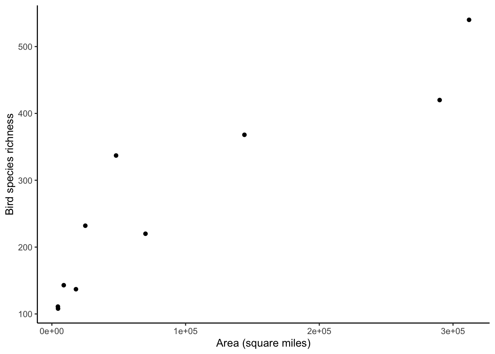
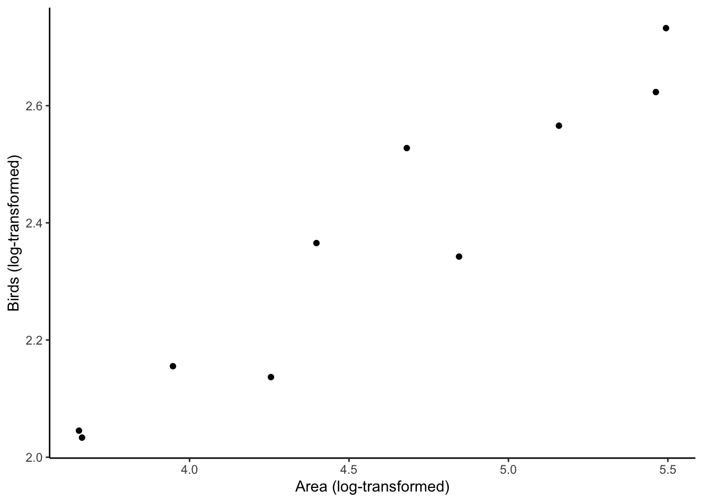
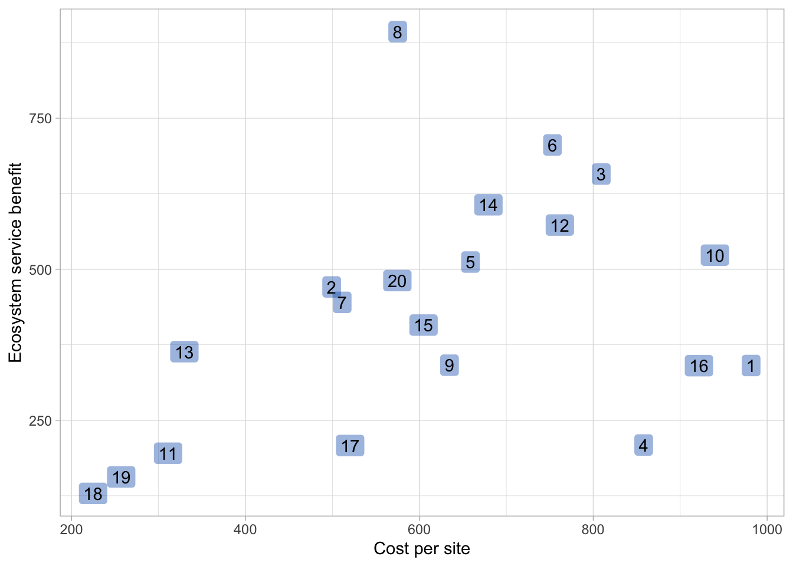
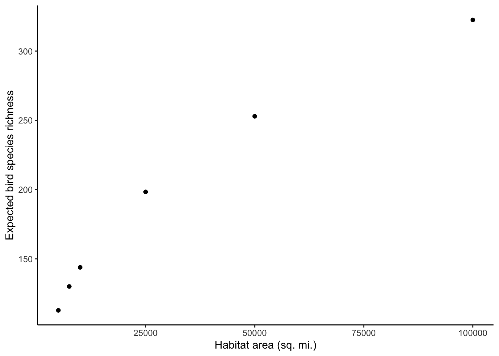
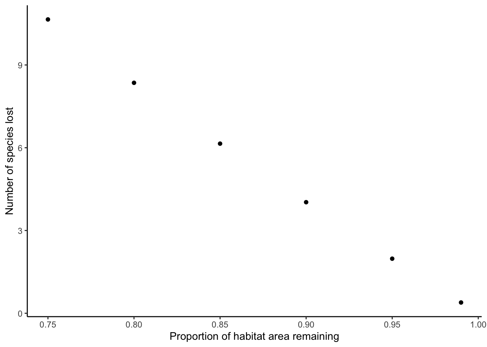

Biodiversity & prioritization
1 Species-area relationship
Observations of species richness (counts of species) across islands (or habitat fragments–sometimes called patches) showed a consistent relationship where as islands became larger in area, they tended to support more species: that is, larger habitat areas have higher species richness. This is a pattern that has been consistent across different taxonomic groups (e.g. vascular plants, birds, insects, fish) and regions (e.g. California, Southeast Asia, the Florida keys, etc.).
The species-area relationship holds that we can predict the number of species that would be found on a habitat of a given area. Specifically, if \(S\) denotes the number of species (species richness), then \(S = c A^z\) where \(A\) is habitat area, and \(c\) and \(z\) are constants.
### Code to create a data table storing the Southeast Asian bird data
seAsiaBirds <- tibble::tibble(areaMi2=c(312000,290000,144000,70000,48000,25000,4500,8870,18000,4600),
birds=c(540,420,368,220,337,232,111,143,137,108))
### Display first few rows of the Southeast Asia bird dataset
seAsiaBirds## # A tibble: 10 x 2
## areaMi2 birds
## <dbl> <dbl>
## 1 312000 540
## 2 290000 420
## 3 144000 368
## 4 70000 220
## 5 48000 337
## 6 25000 232
## 7 4500 111
## 8 8870 143
## 9 18000 137
## 10 4600 108### Create a plot of bird richness versus island area
p <- ggplot(seAsiaBirds,aes(x=areaMi2, y=birds))
p <- p + geom_point()
p <- p + labs(x="Area (square miles)",y="Bird species richness")
p <- p + theme_classic()
p
Oof! What we can see in the previous plot are the issues I raised in class on Tuesday. Issue 1): The x-axis values and y-axis values are quite wide-ranging (x-axis range: [4500, 312000]; y-axis range: [108, 540]). Issue 2): The relationship looks like a power law. New England Complex Systems Institute has a great explainer for power law relationships and a familiar example: the area of a square, which is always a power of its length. We can turn this power law relationship between habitat area and species richness to a linear one, by taking the logs of both variables (area and species richness).
1.1 Arriving at a linear log-log species-area relationship
We expect that \(S = c A^z\). Let’s try an example! Given the values of \(c\) and \(z\) that you estimated in the Google sheet activity, let’s estimate how many birds we would expect for the smallest island, Palawan: \(S = 10^{0.76} 4500~\text{square miles}^{0.35}\), which yields around 109 species. In our dataset, Palawan in fact had 111 species - so we can see that this predicted richness of 109 species is not too far off from the actual richness!
For this relationship between species and habitat area, \(S = c A^z\), how do we go about estimating \(c\) and \(z\)? This expression is a power law, so we can make it linear instead by taking a logarithm (henceforth, log) of both sides, such that: \(\log_{10}(S) = \log_{10}(c A^z)\) MathBench at Univ. of Maryland has a great, intuitive explanation for why log-log transformations “linearize” power laws (that is, turn the relationship from a power law into a straight line).
Can we simplify this algebra above? Yeah! Note that \(\log_{10}(c A^z)\), by the properties of logs (see below if you’d like refresher on log properties), can be re-expressed as \(\log_{10}(c) + \log_{10}(A^z)\), which can be further simplified to \(\log_{10}(c) + z \log_{10}(A)\). From here on, I’m going to be lazy and drop the \(()\) and just write the above expression as \(\log_{10} c + z \log_{10} A\).
Now we can take \(\log_{10} c + z \log_{10} A\), and substitute it in to the right-hand side of \(\log_{10}(S) = \log_{10}(c A^z)\), which yields \(\log_{10} S = \log_{10} c + z \log_{10} A\).
Hm … this equation \(\log_{10} S = \log_{10} c + z \log_{10} A\) looks awfully like the equation for a straight line, if we let \(y\) denote \(\log_{10} S\) and \(x\) denote \(\log_{10} A\). Recall that the equation for a straight line is \(y = d + m x\), where \(d\) is the y-intercept (the value of \(y\) when \(x=0\)) and \(m\) is “rise over run”, or the slope, or simply how much \(y\) changes with every unit change in \(x\). (A nice explainer on slopes from the Monterey Institute.)
By substituting in the values from the linear species-area equation into the equation for a straight line, we realize that: \(y = \log_{10} S; d + mx = \log_{10} c + z \log_{10} A\). What does that mean? By pattern matching, we see that \(\log_{10} c\) is playing the same role as \(d\) (y-intercept) and \(z\) is playing the same role as \(m\) (slope or rise-over-run).
Thus, given that the relationship between \(\log_{10} S\) and \(\log_{10} A\) is a straight line, we expect that we should be able to 1) use \(\log_{10}\) to transform our actual species richness and habitat area data, then 2) fit a straight line to those \(\log_{10} - \log_{10}\) transformed data.
I show you how to calculate \(d\) (where \(d = \log_{10} c\) from the log-log linear species-area relationship) and \(z\) in R below. lm is an R function to perform an ordinary least squares linear regression. Don’t worry too much about the details for lm; we’ll look at lm in more depth in a later week’s tutorial.
First, we confirm that the log-log transformation makes the Southeast Asian bird-habitat area relationship look linear. Second, we use lm to calculate \(d\) and \(z\).
### Below, we first apply log10 to the columns of our data on SE Asian birds
seAsiaBirds <- seAsiaBirds %>%
mutate(log10Area = log10(areaMi2), log10Birds = log10(birds))
# Display seAsiaBirds in the console
seAsiaBirds## # A tibble: 10 x 4
## areaMi2 birds log10Area log10Birds
## <dbl> <dbl> <dbl> <dbl>
## 1 312000 540 5.49 2.73
## 2 290000 420 5.46 2.62
## 3 144000 368 5.16 2.57
## 4 70000 220 4.85 2.34
## 5 48000 337 4.68 2.53
## 6 25000 232 4.40 2.37
## 7 4500 111 3.65 2.05
## 8 8870 143 3.95 2.16
## 9 18000 137 4.26 2.14
## 10 4600 108 3.66 2.03 # Confirm that the log-log transformation linearized our data
p <- ggplot(seAsiaBirds,aes(x = log10Area, y = log10Birds))
p <- p + geom_point()
p <- p + labs(x="Area (log-transformed)",y="Birds (log-transformed)")
p <- p + theme_classic()
p
### Use lm to calculate the values of d and z and store the model in the object speciesAreaModel
speciesAreaModel <- lm(log10Birds ~ log10Area, data=seAsiaBirds)
## See the values estimates for d and z
print("The cofficient names (Intercept) corresponds to d and log10Area to z")## [1] "The cofficient names (Intercept) corresponds to d and log10Area to z"coef(speciesAreaModel)## (Intercept) log10Area
## 0.7553138 0.3506425 ## Store the estimates in the objects d and z
d <- coef(speciesAreaModel)[1] # first item in this two-item vector is the intercept of the straight line fit to our log-log transformed Southeast Asian birds dataset
z <- coef(speciesAreaModel)[2] # second item in the two-item vector is the slopeNow that we’ve estimated \(d\) and \(z\), let’s use those values to calculate the expected species richness on the island of Timor, which is 18,000 square miles. Given that \(\log_{10} S = \log_{10} c + z \log_{10} A\) and that \(d = \log_{10} c\), we can directly plug in our \(d\) and \(z\) values into: \(\log_{10} S = d + z \log_{10} A\). That’s annoying though, because we get a value for \(S\) that is log-10 transformed. That is, in this case \(S\) is described in powers of 10, rather than the actual number of species.
Alternatively, we can get rid of the logs by raising both sides to the power of 10, yielding: \(10^{(\log_{10} S)} = 10^{(d + z \log_{10} A)} \rightarrow 10^{(\log_{10} S)} = 10^{(d \log_{10}(A^z))} \rightarrow S = 10^d A^z \implies S = c A^z\). Recall that \(d = \log_{10} c \implies 10^d = c\), so this ends up working out as we convert \(d\) back to \(c\) by raising 10 to the power of \(d\).
Phew! Let’s go ahead and calculate the expected richness for Timor (18000 miles\(^2) = 10^d A^z\), which is about 176.76 species. The actual number of bird species on Timor is filter(seAsiaBirds,areaMi2==18000) %>% select(birds), which is 137 species. The numbers look pretty similar! However, it does appear that Timor has somewhat fewer species than expected (137 birds when given the other Southeast Asian island-bird data points, we’d expect 176.76 species).
1.1.1 Quick refresher on logarithms
\(\log_{10}\) calculator from Wolfram Alpha. Khan Academy has a great refresher series on calculating logarithms and logarithm properties.
You can also confirm the different rules of logs by using R as a calculator! Recall that in Week 1, we learned about how R can also be used as a calculator in addition to statistical computing. Below, I show how you can confirm the properties of logs using R.
Additionally, this is a friendly reminder that if you’re ever confused about a function, you can pull up a help page about it using ?functionname (e.g. ?mutate or ?geom_point). One of the things I find most helpful on the help page is the examples that are typically provided at the bottom of the help page.
### Recall the log-log species-area relationship:
### log S = log(c A^z) (Equation 1)
### we can confirm that the previous equation is
### mathematically equivalent to the following one:
### log S = log c + log(A^z) (Eqn. 2)
### which is in turn equal to:
### log S = log c + z log A (Eqn. 3)
### For convenience, we'll call c and z something different:
### c1 and z1
### That way, we don't overwrite the previously calculated values
### for c and z from the Southeast Asia bird dataset
### Let c1 = 5, z1 = 0.28, A = 1000
### We'll calculate both expressions
### and confirm that they are identical
c1 <- 5
z1 <- 0.28
A <- 1000
eqn1 <- log10(c1*A^z1)
eqn1 # value of the first equation## [1] 1.53897eqn2 <- log10(c1) + log10(A^z1)
eqn2 # value of second equation## [1] 1.53897eqn3 <- log10(c1) + z1*log10(A)
eqn3 # value of third equation## [1] 1.538971.2 Estimating species losses from habitat loss
One of the reasons why the species-area relationship is so central to conservation is that it gives us a way to estimate how habitat loss can reduce the number of species a location (a.k.a. site, patch, fragment) can support.
However, we immediately encounter a problem. If we want to predict how species richness will change at one site, and we don’t have a local dataset to estimate \(c\) and \(z\), what are we supposed to do? Past ecological research indicates that \(z\) tends to fall in a fairly narrow range between [0.15, 0.39] (Preston 1962; MacArthur and Wilson 1967). However, values for \(c\) vary widely, depending on the taxonomic group (e.g. birds have a very different y-intercept for their straight-line log-log species-area relationship than insects or microbes) and region.
In a situation where we don’t have values of \(c\) and \(z\) for our system, while we can at least lean on these past values for \(z\), we’re going to want some way to get rid of \(c\).
Let’s start with \(A_0\) denoting the original amount (area) of habitat and \(A_1\) denoting the amount of habitat left after some is destroyed; that is, \(A_1 < A_0\). Similarly, \(S_0\) denotes the initial number of species and \(S_1\) the number of species after habitat conversion has brought the habitat area down from \(A_0\) to \(A_1\).
From the species-area (power law) relationship, we know that: \(S_1 = c A_1^z\) \(S_0 = c A_0^z\)
Maybe we can get rid of the pesky \(c\) term by dividing the two equations like so… \(\frac{S_1}{S_0} = \frac{c A_1^z}{c A_0^z}\)
We can cancel the two \(c\) terms in the numerator and denominator of the right-hand side fraction, and then the equation simplifies to \(\frac{S_1}{S_0} = \frac{A_1^z}{A_0^z}\)
We can simplify things further by noting that \(A_1\) is always going to be some fraction of \(A_0\), as \(A_0\) represents the original extent (area) of habitat, and \(A_1\) the amount of that habitat that is still standing after destruction happens. That is, \(A_1 = R A_0\) where \(R\) stands for habitat \(R\)emaining after loss.
In that case, when we plug in this expression \(A_1 = R~A_0\) to \(\frac{S_1}{S_0} = \frac{A_1^z}{A_0^z}\) we arrive at: \(\frac{S_1}{S_0} = \frac{(R~A_0)^z}{A_0^z}\)
Based on the product rule for exponents, \(\frac{S_1}{S_0} = \frac{(RA_0)^z}{A_0^z}\) is equivalent to: \(\frac{S_1}{S_0} = \frac{R^z A_0^z}{A_0^z}\)
We can cancel out the two \(A_0^z\) terms and finally land at: \(\frac{S_1}{S_0} = R^z\) This equation gives us a way to calculate what proportion of species remain after some fraction of habitat is lost.
We can multiply the denominator on the left hand side over, seeing that \(S_1 = S_0 R^z\). We can then also calculate the number of species lost, \(S_0 - S_1\), denoted as \(\Delta S\) as: \(\Delta S = S_0 - S_1 \rightarrow S_0 - S_0 R^z \implies \Delta S = (1-R^z) S_0\).
### We can take the value of z that we calculated in the Southeast Asia
### bird dataset and use that to calculate 1) what proportion of species
### would remain after habitat loss and 2) what number of species would be
### lost after habitat loss.
S_0 = 111 # initially we have 111 species in this example (Palawan)
R = 0.9 # We lose 10% of habitat in this example: (1-R)*100% = 10%
species_proportion_surviving <- R^z
species_lost <- S_0 * (1-R^z)As such, we expect to keep 96.37% of the original species pool of 111 bird species after losing 10% of the habitat area. We expect that we will lose around 4 bird species after the loss of 10% of the habitat area.
1.3 Exercises
- Follow the code above to calculate \(c\) and \(z\) for the Southeast Asia birds dataset.
- Using \(c\) and \(z\), calculate the expected bird species richness for habitat patches that are 5000, 7500, 10000, 25000, 50000, 100000 square miles. Plot expected bird species richness on the y-axis and habitat area on the x-axis on a scatterplot.
- Generate a scatterplot that displays how many bird species will be lost from Palawan island if you lose 1%, 5%, 10%, 15%, 20%, and 25% of the habitat area.
2 Prioritizing decisions in conservation
The Mace et al. (2007) reading for Week 5 describe different tools to prioritize scarce resources (such as money, labor, etc.) to maximize conservation gains. The other readings (Kareiva 2010; DeAngelis 2019) describe a debate in conservation: when is it more effective to concentrate effort on fewer (already nominally protected) sites versus expanding conservation effort to additional (unprotected/underprotected) sites?
The activity below is intended to provide more insight into conservation prioritization/systematic conservation planning. We’ll consider a scenario where we are considering a landscape with 20 sites, each of which has a different cost to protect (perhaps costs to enact easements on private lands) and each of which has a different level of ecosystem service benefit. For purposes of this activity, we will assume that the benefits are additive.
What would it mean if the benefits were not additive? Then, for example, if we conserved site 1 and it protected habitat for 100 species, and we conserved site 2 and it protected 50 species, we would need to calculate the overall sum total benefit correcting for the redundancy between the two sites. We couldn’t assume that we protected 150 distinct species. Instead, there could be an arbitrary number (1, 10, 27, or even 50) species shared between the two sites. The overall number of species that we protect would be less than 150–it would only be the number of unique species across both sites.
Below, I first create a dataset where we have 20 sites. Each site has some cost to enact conservation and it offers some level of ecosystem benefits.
### Creating a simulated conservation dataset
### This simulated data has 20 sites with different
### costs and benefits. These could be 20 habitat patches,
### or some other set of 20 locations where we have to
### decide which sites we would prioritize for
### conservation actions.
set.seed(47) # instantiating random seed to ensure reproducibility
conservationDF <- tibble::tibble(
site_id = c(1:20), # site ID
costs = runif(20,min=200,max=1000), # cost of enacting conservation
value = 1/(1 + exp(-costs/max(costs))) * abs(rlnorm(20,2,0.5)) * 100 # ecosystem benefit of each site
)
conservationDF # display the conservation dataset## # A tibble: 20 x 3
## site_id costs value
## <int> <dbl> <dbl>
## 1 1 982. 341.
## 2 2 499. 471.
## 3 3 809. 658.
## 4 4 858. 209.
## 5 5 659. 512.
## 6 6 753. 706.
## 7 7 511. 445.
## 8 8 575. 893.
## 9 9 635. 341.
## 10 10 940. 523.
## 11 11 311. 195.
## 12 12 762. 573.
## 13 13 330. 363.
## 14 14 679. 607.
## 15 15 605. 408.
## 16 16 922. 340.
## 17 17 520. 208.
## 18 18 225. 129.
## 19 19 257. 156.
## 20 20 575. 481.Let’s say that we have a maximum budget of \(1500\). What is the best, most effective (mathematically optimal) set of sites that we should conserve to maximize “bang-for-buck” (ecosystem service benefits for total amount spent)? We could plot, for the 20 sites, value versus cost and use that as one way to select sites.
### Generate scatterplot for value versus cost
p <- ggplot(conservationDF, aes(x=costs, y=value, label=site_id))
p <- p + geom_label(position=position_dodge2(width=0.8),fill=POMblue,alpha=0.4,label.padding=unit(0.2,"lines"),label.size=0) # plot site labels with commands to avoid overplotting, remove label border
p <- p + labs(x="Cost per site", y="Ecosystem service benefit") # change x- and y-axis labels
p <- p + theme_light() # change background appearance of plot
p
We might look at the preceding graph and think that we should select all of the sites with the largest ecosystem service values (large conservation benefit) without exceeding our maximum budget of $1500. In that case, we’d select sites 8 and 6, totaling 1598.899 ecosystem service benefits at a cost of $1328.29. Below, I display the first four rows of this conservation decision making dataset
dplyr::arrange(conservationDF, desc(value))[1:4,]## # A tibble: 4 x 3
## site_id costs value
## <int> <dbl> <dbl>
## 1 8 575. 893.
## 2 6 753. 706.
## 3 3 809. 658.
## 4 14 679. 607.However, is picking the sites with the largest ecosystem service values most effective or should we select the most cost-effective sites? If we wanted to focus on the cost-effective sites, how would we do that?
conservationDF <- conservationDF %>%
mutate(vpw = value/costs) # value per cost for each site
p <- ggplot(conservationDF, aes(x=value, y=vpw, label=site_id))
p <- p + geom_label(position=position_dodge2(width=0.8),fill=POMblue,alpha=0.4,label.padding=unit(0.2,"lines"),label.size=0) # plot site labels with commands to avoid overplotting, remove border
p <- p + labs(x="Benefit", y="Benefit/Cost") # change x- and y-axis labels
p <- p + theme_minimal() # change background theme
p
As we can see from this plot and the subset of the table below, when we include benefit per unit cost across the 20 sites, we may come to a different conclusion about which sites to prioritize. Namely, we may focus on sites 8 and 13, yielding a total level of 1256 ecosystem service benefit units at a cost of $905. However, how should we pick among the remaining sites that don’t break our budget?
dplyr::arrange(conservationDF, desc(vpw))[1:6,]## # A tibble: 6 x 4
## site_id costs value vpw
## <int> <dbl> <dbl> <dbl>
## 1 8 575. 893. 1.55
## 2 13 330. 363. 1.10
## 3 2 499. 471. 0.943
## 4 6 753. 706. 0.937
## 5 14 679. 607. 0.893
## 6 7 511. 445. 0.871Based on that insight about cost effectiveness, we’ll run an algorithm that provides an approximate solution for optimally selecting sites to maximize ecosystem service benefits while not exceeding our budget. The problem that we are facing, in choosing which sites to select based on benefits and costs, is an example of a “knapsack problem” (a fellow undergraduate student, Mr. Benyam Ephrem of Univ. Maryland, College Park c/o 2021, has created an excellent video explainer–the first 3 minutes lays out the problem very nicely).
In the knapsack problem, you can only fit a certain number of objects in a backpack (a.k.a. knapsack in some flavors of Commonwealth English) before it gets too heavy or runs out of space–so you want to be strategic about which items you pick. For instance, I faced this exact problem when I went on a grocery shopping trip to our beloved chain in the Southland, Super King and walked over with my backpack when my car was getting fixed (IMO, no way to bike down there safely with all of the I-10 on-ramp traffic!). I could only fit so many items in my backpack, so I had to be judicious. Would I prioritize a big block of cheese over a tub of yogurt? How about tofu? How would I manage to get a good mix of fresh produce while also getting needed dry goods? At least chocolate, a high-value item for me, is not that big nor heavy–so it was definitely getting a spot in the shopping cart!
Luckily, the knapsack problem offers a way to precisely solve for the most optimal solution to a problem where you have to trade-off between individual, discrete items with different costs (in my grocery case, the size and weight of items; in the conservation case, the cost of each site) and benefits (grocery: deliciousness/utility for cooking meals, conservation: preserving species or ecosystem services, etc.) subject to a constraint (grocery: the size of my backpack and the maximum weight I was willing to carry, conservation: our maximum budget or some maximum number of sites that is feasible for managing). Below, I provide a function that gives an approximate solution to our conservation site selection problem.
Remember: we are looking to select some subset of our 20 sites in a principled way (maximizing benefits) while not exceeding our maximum budget ($1500).
## Function to solve for "nearly-optimal" selection of sites
## to maximize biodiversity conservation
# Don't worry too much about the specifics of this function - just copy it into your R console
# It will use different rules of thumb to find which sites are (approximately) optimal for conserving
conservation_site_selection <- function(conservationDF, maxcost) {
knapsack <- data.frame(conservationDF)
capacity <- maxcost
# 1) Greedy algorithm
# sort by value per weight
knapsack <- knapsack[order(knapsack$vpw, decreasing = TRUE),]
# fill knapsack with all items taken in this sequence
# and still fitting into the knapsack
packed_items <- c()
packed_weight <- 0
packed_value <- 0
for (id in 1:nrow(knapsack)) {
item <- knapsack[id, ]
left_capacity <- capacity - packed_weight
# check if next item in the sequence still fits into knapsack
if (left_capacity > 0 && item$costs <= left_capacity) {
packed_items <- c(packed_items, item$site_id)
packed_weight <- packed_weight + item$costs
packed_value <- packed_value + item$value
}
}
# 2) Addition to "modified greedy"
# determine most valuable single item fitting into knapsack
knapsack <- knapsack[order(knapsack$value, decreasing = TRUE),]
best_single_item <- 0
best_single_value <- 0
best_single_weight <- 0
for (id in 1:nrow(knapsack)) {
item <- knapsack[id, ]
# check if next item in the sequence still fits into knapsack
if (item$costs <= capacity) {
best_single_item <- item$site_id
best_single_value <- item$value
best_single_weight <- item$costs
break
}
}
# now return best configuration
if (best_single_value < packed_value) {
ret_val <- tibble::tibble(Sites=paste(packed_items,collapse=", "),
TotalBiodiv=packed_value,
TotalCost=packed_weight)
} else {
ret_val <- tibble::tibble(Sites=best_single_item,
TotalBiodiv=best_single_value,
TotalCost=best_single_weight)
}
return(ret_val)
}
### Solving for the most optimal set of sites
result <- conservation_site_selection(conservationDF = conservationDF, maxcost=1500)In this model, we have selected the following sites:
result## # A tibble: 1 x 3
## Sites TotalBiodiv TotalCost
## <chr> <dbl> <dbl>
## 1 8, 13, 2 1727. 1404.2.1 Excercise
What would we select if we increased our budget to $2000 or decreased it to $1200?
2.2 Learning more about prioritization in conservation site selection
If you would like to learn more about reserve site selection algorithms, Haight and Snyder 2009 and Moilanen et al. 2009 provide two great overviews on how certain operations research optimization methods are used in conservation.
3 Answers to exercises
3.1 Species-area relationship
- Follow the code above to calculate \(c\) and \(z\) for the Southeast Asia birds dataset.
Answer: Run the code that I provide and make sure you confirm you get the same values for \(c\) and \(z\).
- Using \(c\) and \(z\), calculate the expected bird species richness for habitat patches that are 5000, 7500, 10000, 25000, 50000, 100000 square miles. Plot expected bird species richness on the y-axis and habitat area on the x-axis on a scatterplot.
Answer:
### Instead of repeating the same calculation over and over again, we can create a function to do that for us.
### We'll specify the parameters for our function in the function(...)
### definition.
calculating_expected_richness <- function(habitat_area, d, z) {
c <- 10^d # see reasons above for doing this.
expected_species <- c*habitat_area^z
return(expected_species)
}
### Defining a vector to store habitat area
habitat_area <- c(5000, 7500, 10000, 25000, 50000, 100000)
### We'll create a new data object to store these outputs
### We'll call it expectedBirdsDF to stand for
### expected bird species richness data frame
expectedBirdsDF <- tibble::tibble(area = habitat_area,
expBirds = calculating_expected_richness(habitat_area, d=d,z=z))
### Display expectedBirdsDF
expectedBirdsDF## # A tibble: 6 x 2
## area expBirds
## <dbl> <dbl>
## 1 5000 113.
## 2 7500 130.
## 3 10000 144.
## 4 25000 198.
## 5 50000 253.
## 6 100000 322.### Generate plot
p <- ggplot(expectedBirdsDF, aes(x=area, y=expBirds))
p <- p + geom_point()
p <- p + labs(x="Habitat area (sq. mi.)",y="Expected bird species richness")
p <- p + theme_classic()
p
Note: I have created two functions in this week’s tutorial. If you would like to learn more about how to create your own functions in R (not necessary at present for this class), please check out R for Data Science, Chapter 19.
- Generate a scatterplot that displays how many bird species will be lost from Palawan island (area = 4500 square miles, 111 bird species) if you lose 1%, 5%, 10%, 15%, 20%, and 25% of the habitat area.
Answer:
### Instead of repeating the same calculation over and over again, we can create a function to do that for us.
### We'll specify the parameters for our function in the function(...)
### definition.
calculating_number_species_lost <- function(Remaining, z, S0) {
number_lost <- (1-Remaining^z)*S0 # Remaining is habitat area remaining, z is the slope of the species-area relationship, and S0 is the initial species pool
return(number_lost)
}
### Defining a vector to store habitat area
remaining_extent <- 1 - c(1, 5, 10, 15, 20, 25)/100 # remaining proportion of habitat after habitat destruction happens
### We'll create a new data object to store these outputs
### We'll call it expectedBirdsLost to stand for
### expected bird species that are lost after habitat destruction
expectedBirdsLost <- tibble::tibble(remaining=remaining_extent,
expLoss = calculating_number_species_lost(Remaining=remaining_extent,z=z,S0=111))
### Display expectedBirdsDF
expectedBirdsLost## # A tibble: 6 x 2
## remaining expLoss
## <dbl> <dbl>
## 1 0.99 0.390
## 2 0.95 1.98
## 3 0.9 4.03
## 4 0.85 6.15
## 5 0.8 8.35
## 6 0.75 10.7### Generate plot
p <- ggplot(expectedBirdsLost, aes(x=remaining, y=expLoss))
p <- p + geom_point()
p <- p + labs(x="Proportion of habitat area remaining",y="Number of species lost")
p <- p + theme_classic()
p
3.2 Systematic prioritization in conservation
- What sites would we select if we increased our budget to $2000?
Answer:
### Perform site selection
result <- conservation_site_selection(conservationDF=conservationDF,maxcost=2000)
### Display result
result## # A tibble: 1 x 3
## Sites TotalBiodiv TotalCost
## <chr> <dbl> <dbl>
## 1 8, 13, 2, 7 2172. 1915.We’d select sites 8, 13, 2, and 7.
- What sites would we select if we decreased our budget to $1200?
Answer:
### Perform site selection
result <- conservation_site_selection(conservationDF=conservationDF,maxcost=1200)
### Display result
result## # A tibble: 1 x 3
## Sites TotalBiodiv TotalCost
## <chr> <dbl> <dbl>
## 1 8, 13, 19 1413. 1162.We’d select sites 8, 13, and 19.